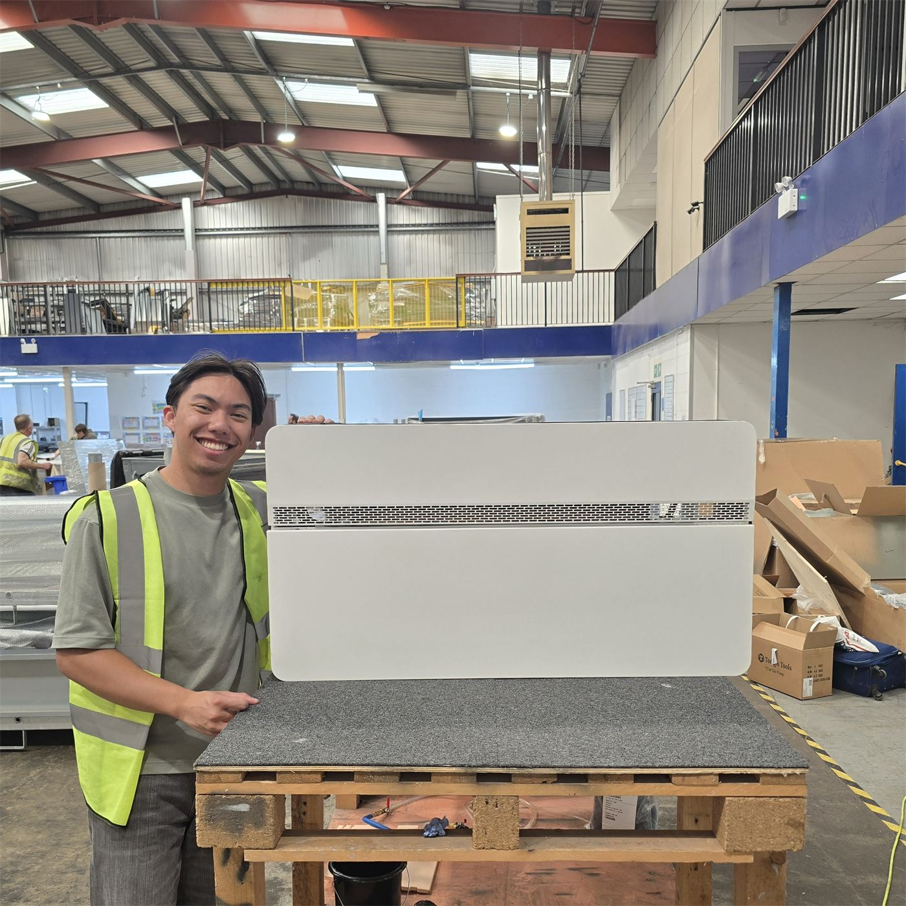
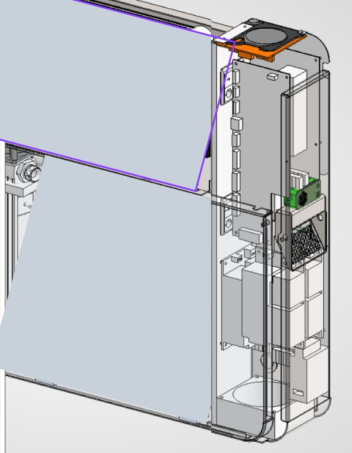
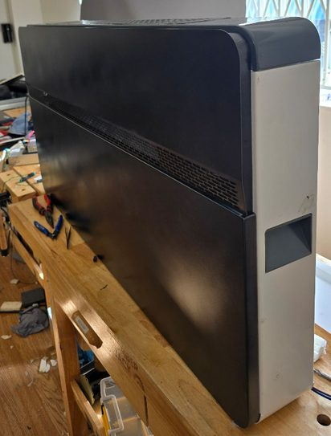
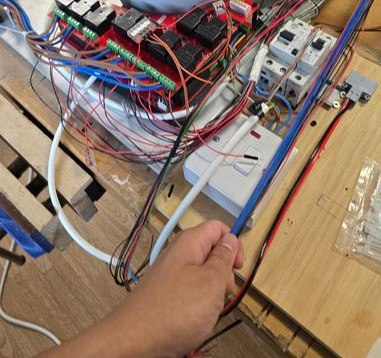
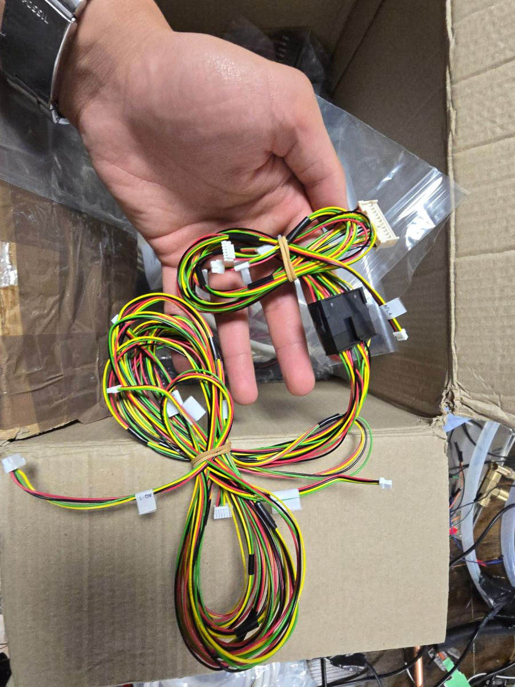
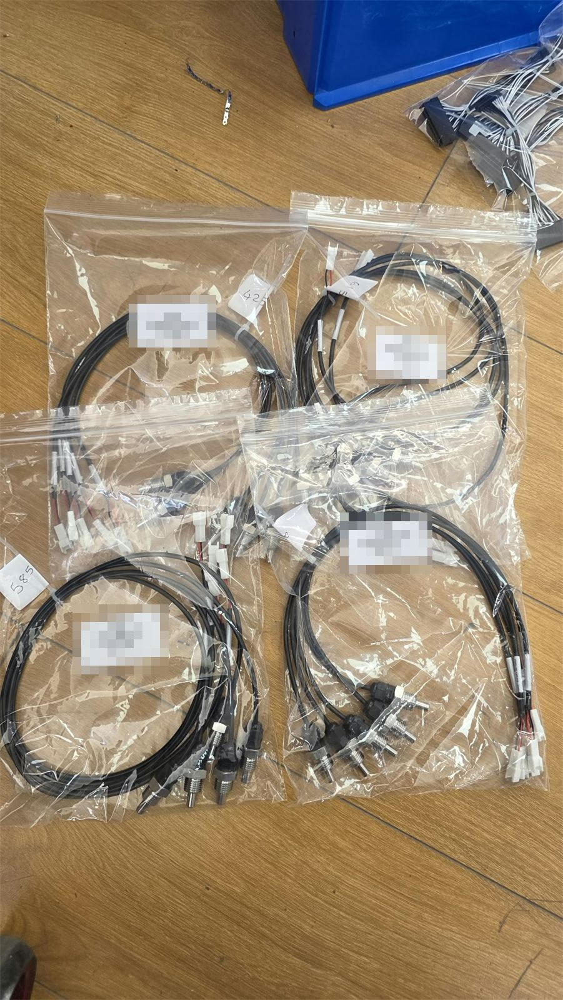
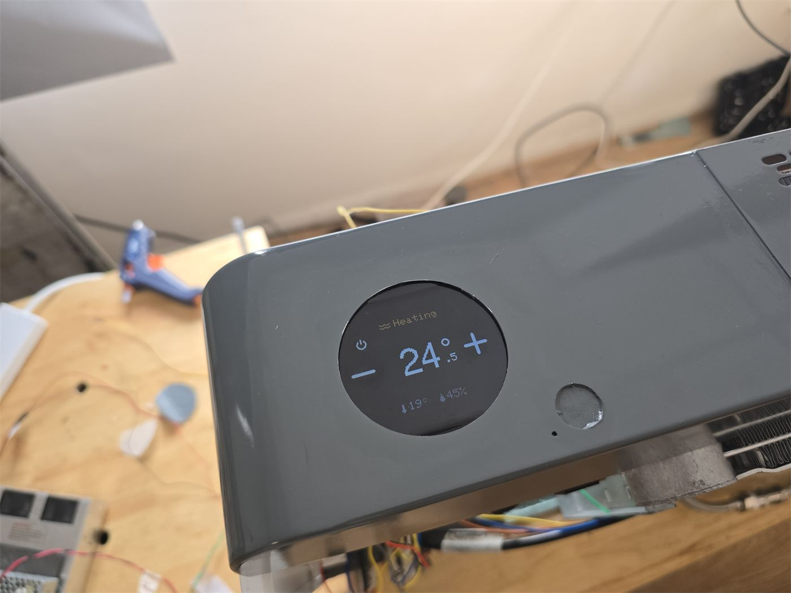

Anzen · Design Engineer · June 2025 to present
Took the Climate Wall's electrics from prototype to pilot homes. I own the electrical subsystem end to end, and across three design iterations the unit went from hand-wired prototype to pilot units that report their own performance. It is now heading to manufacture.

Ownership
Electrics owned end to end
Schematics, wiring, enclosure, HMI, BOM and the PCB subcontractor.
Delivery
From 3 pilots to 15 units
v1.4 ran as 3 pilot units; v2.0's first build is 15 units, across three six-month iterations.
In the field
Units that monitor themselves
Pilot units actively report their own performance.
Build
Easier to build and maintain
Moved from hand-built wiring to supplier-made harnesses.
The product
The Climate Wall is a heating, cooling and ventilation unit designed to fit easily into hard-to-retrofit homes. I joined a team of eight as it moved from MVP to pilot, and I lead how its electronic and electromechanical parts come together.
Fit heating, cooling, ventilation, sensors and control electronics into a slim wall unit that installers can fit in difficult homes.
The electrics had to stay buildable and serviceable while the design changed every six months.
Own the electrical subsystem: schematics, wiring diagrams, the sheet metal electrical enclosure, wiring routes and component mountings, and the consumer touchscreen HMI. I lead BOM and component selection and manage an external PCB subcontractor.
I prototyped, debugged and integrated the sensors and actuators, ran component shootouts, and sized four fan types and their motors for efficiency.
Each iteration reached test homes with electrics that were easier to build and service, and pilot units now monitor their own performance.
Component shootouts, including the TEC rig, raised performance while cutting cost. Version 2.0 is now gearing up for manufacture.
| Role | Electrical subsystem owner |
|---|---|
| Team | 8 engineers |
| Iterations | 3, on six-month cycles (v1.3 → v1.4 → v2.0) |
| Electrical | Schematics, wiring diagrams, harness drawings, sensor and actuator integration |
| Mechanical | Sheet metal enclosure and mountings, 3D printed and insulation parts, in SolidWorks PDM with manufacturing drawings and tolerances |
| Interface | Consumer touchscreen HMI |
| Suppliers | External PCB subcontractor, harness manufacturer |
| Scale | v1.4: 3 pilot units. v2.0: first set of 15 units |
| Status | v2.0, preparing for manufacture |


Wiring looms · three iterations
Each version of the unit needed organised, maintainable wiring. I took it from looms I built by hand to harnesses a supplier makes to my drawings.

Built 22 looms by hand for three MVP and pilot units.

Designed and drew the harnesses, then worked with a specialist supplier to manufacture them for the 3 pilot units in test homes.

Designing a simplified loom tree for the commercial version, starting with a first set of 15 units.
Moving from hand-built looms to supplier-made harnesses made the units consistent to build and easier to maintain in test homes, and set up the wiring for manufacture.

Contact